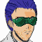

ダニエル 「・・・ほッ、本気ですか？ ヘパイストスを捨てる・・・って」
ダニエル 「・・・ほッ、本気ですか？ ヘパイストスを捨てる・・・って」
 キャロライン 「予定より、動かせる兵が少ない以上、戦力を集めての一点防御しかないわ。・・・いつぞやの教訓を活かしてね」
キャロライン 「予定より、動かせる兵が少ない以上、戦力を集めての一点防御しかないわ。・・・いつぞやの教訓を活かしてね」
 イブレイ 「ふン。我が艦は特命を受け、アリスタリウス守護のため、移動を開始する。ヘパイストス司令部に連通達しろ。”ご武運を”とな」
イブレイ 「ふン。我が艦は特命を受け、アリスタリウス守護のため、移動を開始する。ヘパイストス司令部に連通達しろ。”ご武運を”とな」
 パーチ 「陥落だ」
パーチ 「陥落だ」
 ケネス 「ハイン・・・っ！！」
ケネス 「ハイン・・・っ！！」
 ハインツ 「お、・・・あれ、俺・・・」
ハインツ 「お、・・・あれ、俺・・・」
 アン 「直撃ってナニよ？ あの馬鹿・・・直げ・・・」
アン 「直撃ってナニよ？ あの馬鹿・・・直げ・・・」
 ボッシュ 「行くんじゃない」
ボッシュ 「行くんじゃない」
アン 「ウソだ。だって、ほら、ハイン・・・」
タイトル
|
− dances in a illusion − |
トレーニングルームで格闘するザカリアとエドガー。だが、攻めるザカリアを、エドガーがあしらっている。
 ザカリア 「うらあァァァァァっ！」
ザカリア 「うらあァァァァァっ！」
 エドガー 「声を出すのは、得策じゃない。相手が怯んでない限りはな」
エドガー 「声を出すのは、得策じゃない。相手が怯んでない限りはな」
ザカリア 「ちぃっ！」
エドガー 「何度言えばわかる。派手な動きは無駄な動きだ」
ザカリア 「くそっ」
エドガー 「何処を狙ってる？」
カウンターを合わせられ、拳の一発で倒れ込むザカリアだが、その瞬間に息を吹き返して足を取りに行く。
ザカリア 「ここだよッ！」
エドガー 「知ってる」
だが、エドガーは動じる様子もなく膝蹴りであっさりと対応。ザカリアがうずくまる。
ザカリア 「げふっ！」
エドガー 「・・・そろそろアリスタリウスに合流の時間だ。準備しろ」
きびすを返すエドガー。悶絶するザカリア。
ザカリア 「・・・ふッ、くっ・・・」
マトリックス。ハインツの宙葬。
 アベル 「ごめんなさい、ハインツさん。僕は・・・」
アベル 「ごめんなさい、ハインツさん。僕は・・・」
 シャヒーナ 「アベル・・・」
シャヒーナ 「アベル・・・」
ケネス 「自分を責めるな。お前がスーパーマンでも、犠牲者をゼロに出来る訳じゃない」
アベル 「違うんです。・・・それも、あるけど。僕は、まだハインツさんに謝ってなかったんです」
シャヒーナ 「謝る？」
ハインツ （けっ、俺だってお前の友達でいたつもりだったけどな。そう思うのはココまでにしとくよ）
アベル 「ハインツさんは、友達以上に、僕の面倒を見てくれる先輩で・・・、その事を、僕はまだ、謝ってなくて・・・」
ケネス 「言わなくてもわかってるよ。ハインツは。アイツは自分の役割を一番よくわかってた。いつでもな」
アベル 「でもっ」
ケネス 「ハインツの死を無駄にしたくなかったら、今はとにかく、アリスタリウス攻略に専念しろ」
オデッセイア。
キャロライン 「エドガー、ザカリア、カイン、イヴリン、パーチ、バーナバス、オルダス。・・・ようやく、このアリスタリウスに戦力が終結したわね」
 ケーラー 「嬢ちゃん、その事で、少し話がある」
ケーラー 「嬢ちゃん、その事で、少し話がある」
むっとして、
キャロライン 「・・・何です？」
ケーラー 「マシンが足りない。模擬戦でパイロットを選抜させる」
キャロライン 「・・・どういう・・・」
ケーラー 「サテュロスとビハインドの損傷が激しい。特にビハインドだ。ザカリアとカイン、どちらにマシンを与えるかを模擬戦の結果で決める・・・。簡単なことだ」
キャロライン 「・・・無駄な消耗だとは？」
ケーラー 「必要な儀礼だよ」
宇宙に流されるハインツの棺桶。敬礼で見送るクルー達。
アン （おやすみ・・・。ハインツ）
シャヒーナ 「・・・大丈夫？」
アン 「平気・・・には見えてないでしょうね。実際、平気じゃないし。・・・あんたは？」
シャヒーナ 「あなたがどんな生活を送っていたか知らないけど、私たちが育ったのは”戦争をして死んだ方がマシ”な場所だったから」
アン 「・・・そうね。あたしも似たようなモノだけど、・・・ここに来てから、もう誰も死なないと思ってた・・・。死ぬってわかってれば、もっと・・・、もう少し・・・、優しくしてれば良かった・・・」
シャヒーナ 「悔やんでも仕方ないけど、そうかも知れないわ」
アン 「あんたは、喪失感を感じたくないから他人の領域には立ち入らない。悔しいけど正解かも知れない」
シャヒーナ 「そうね。そうかも知れない」
アン 「正解だからって、みんなが真似できる訳じゃなし、あんたが悲しんでない訳でもないのは・・・、わかってる」
シャワー室。
シャワーを浴びながら、悔しそうに壁を叩くカイン。髪の毛がおろしてあるのでアベルとの区別がつかない。
カイン 「相手がアサルトとは言え、僕が、あんな簡単に・・・」
カイン 「何かの間違いだ・・・」
シャワーを止める。
エドガーとのトレーニングで顔を腫らし、痣を作っているザカリア。
エドガー 「くっく。いいツラだな」
ザカリア 「お陰様だ。・・・！」
ザカリア、廊下を歩いてくるカイン（髪の毛がおりている）を見つける。
ザカリア 「アベル！？ ってめええっ！ なんでこんな所にいやがるっ！！」
カイン 「・・・アベル？」不意をつかれたカインに、飛びかかって組み付くザカリア。
ザカリア 「てめえっ、ノコノコとこんな所にッ！！」
カイン 「はン。お前もアレか。僕のクローンにけちょんけちょんにやられちゃったんだ？」
ザカリア 「クロー・・・！ カインか！」
カイン 「正解だよ、単細胞」
２人、揉み合って格闘に。
ザカリア 「誰がっ」
カイン 「お前以外に！」
殴り合う２人に声が掛けられる。
エドガー 「見ちゃおれんな。ジャリ同士の喧嘩はよ」
カイン 「！！ ・・・誰だ？ お前」
エドガーの気迫に動きを止めるカイン。
ケーラー 「エドガー・ミーンマシーン・パウエル。君らの目指す究極にして最強の戦士だよ」
廊下を歩いてくるケーラーが告げる。
管制塔。
エドガー 「こんなお遊びを俺に見せてどうしようってんだ？」
ケーラー 「ちょっとしたショーの始まりだよ。楽しみたまえ。・・・準備はいいか」
宇宙空間。
ザカリア 「こっちはいつでもいいぜ」
 カイン 「同じく。さっさと始めてよ」
カイン 「同じく。さっさと始めてよ」
管制塔。
ケーラー 「キミと行動をともにしてから、ザカリアの能力が、数値として飛躍的に伸びている。どんな魔法を掛けたんだね？」
エドガー 「使ったコトぁねえな。魔法も、超能力も」
ケーラー 「まあ、いい。始めるぞ」
宇宙空間で模擬戦が始まる。
ザカリア 「行くぞオラぁっ！」
カイン 「ふン。雄叫びなんかでびびってくれるとでも思ってるの？」
管制塔。
ケーラー 「機体は、どちらも初めて乗るファルスＧ。・・・どっちが勝つと思うね？」
エドガー 「模擬戦は所詮お遊びだ。勝敗に価値はない」
ケーラー 「キミらしいな。・・・これを見たまえ」
別々のモニターが映す、別のエリアにいる２機のマシンだが、ケーラーがパネルを操作すると、２機が同じエリアにいることが解る。
エドガー 「ハ。お前さん、いい感じに狂ってるぜ」

アイキャッチ「Ｇ−ＧＵＩＬＴＹ」
射撃戦。お互いに近い距離ながらも当たらない。
一見、攻めているのはザカリアだが、カインにはまだ余裕がある。
ザカリア 「ちょこまかとっ」
カイン 「お前こそっ」
管制塔。
ケーラー 「押してるように見えるのはザカリアだが、その実は無駄な動きが多い。・・・やはりまだ、能力ではカインが上か」
エドガー 「何でも数字で判断できるなら世話はねえな」
ケーラー 「私は科学者だよ。真理を０と１、虚と実に求める」
エドガー 「どんな立派な種だろうと、水をやらなきゃ枯れる。簡単なことじゃねえか」
ケーラー 「ザカリアは、キミという肥やしを得て枝葉を伸ばしたか」
エドガー 「そんな大層なモンじゃねえよ。生き残り方を教えただけだ」
ケーラー 「勝利の法則だな」
エドガー 「戦闘に、鉄則はあっても、法則はない。見てな」
戦闘中の２人。
カイン 「五月蠅いヤツだよ、お前・・・！」
ザカリア 「お前、つくづく・・・、似てるぜ」
カインとの戦闘に、ザカリアはアベルを思い浮かべる。
カイン 「クローンなんかと僕を一緒にしないで欲しいね！」
アベル （僕はザカリアを墜としたくないんだ！ なんでわかってくれない！）
ザカリア 「ざけんじゃあ、ねえよ」
アベル （僕はザカリアを殺したくない！ ザカリアは僕の友達なんだ！ 戦線から離脱して！ もうこの戦争には関わらないで！）
ザカリア 「俺は・・・」
エドガー （認められないのか？ お前は、自分より強い相手に叩きのめされ、死の恐怖を味わってブルブル震え上がり、命を助けて貰って喜んでるのさ）
ザカリアが接近して格闘戦に持ち込む。
カインに初めて焦燥が表れる。
カイン 「何だよ、コイツ・・・！」
ザカリア 「お前はいつも！ 俺の前に！」
カイン 「くそっ、何だよこのボロマシン！ 思うように動かないじゃないか！」
ザカリア 「いつも！ いつまでも！ どこまでも！」
ザカリアの猛攻。対するカインが感情を剥き出しにして反撃を開始する。
カイン 「コイツっ！ 落としてやる！！ 下がれよ！ 堕ちろよ！」
あっという間に立場が逆転、ザカリアは防戦と後退を余儀なくされる。
ザカリア 「くッ！？」
カイン 「僕は天才なんだぞ！ 誰も僕に適うはずがないじゃないか！ 調子に乗るなッ！ さっさと堕ちろ！」
距離を取ると同時に銃撃で追撃を掛けるカイン。
だが、ザカリアも再び攻撃に転じる。
管制塔に怒鳴り込んでくるキャロライン。
キャロライン 「ドクター！？ 外の戦闘は何です！？ 許可したのは模擬戦だと・・・！」
ケーラー 「ちょっとした手違いだよ」
エドガー 「そんな事より、そろそろ決まるぜ」
エドガー、モニターを見ながら笑う。
カイン 「堕っちろよォッ！」
ザカリア 「ッ！！」
カインが放った一撃でザカリアの機体が撃破される。

カイン 「あッは。あはは。ほら。あはは」
だが、爆煙の中から、半壊したザカリアの機体が急接近する。
ザカリア 「それがどうしたァ！？ 動けるんだよ！ まだ！」
カイン 「な、なん・・・！？」
ザカリア 「ほらよ」
ザカリアの機体が腕を伸ばし、カインの機体のコックピットを握撃する。
カイン 「ッ！！」
暗転。
ドックに運び込まれた機体と、担架で運ばれるカイン。気を失っているのか、眼は開いているが、動いていない。
キャロライン 「・・・どういう事です？ ドクター」
ケーラー 「命に別状はないよ。左足を欠損の重症だがな。生やすことも出来るが、戦線復帰には２年と言うところか」
担架で運ばれるカインの左足はない。
キャロライン 「決戦は目前ですっ、それを・・・！」
ケーラー 「問題ない。ザカリアはカインを超えた。ホセ・カーロご注文の最強兵士量産計画は着実に進んでいるよ」
キャロライン 「ドクター・・・、あなたは・・・」
ケーラー 「私は、私の仕事を着実にこなしているよ」
エクレシア作戦室。
 ミア 「ヘパイストスが・・・、堕ちた？」
ミア 「ヘパイストスが・・・、堕ちた？」
 ナディア 「海賊が動いているなら、アリスタリウスの陥落も決して低い可能性ではないわ」
ナディア 「海賊が動いているなら、アリスタリウスの陥落も決して低い可能性ではないわ」
ミア 「海賊が有能と言うより、軍が無能なのよ」

クブラカン 「・・・その情報が事実なら、この機会を逃す手はないな」
 フォルビシュ 「その出兵には賛同しよう。ここでセツルメント降下の素振りを見せつければ、充分に停戦への切り札と成り得る」
フォルビシュ 「その出兵には賛同しよう。ここでセツルメント降下の素振りを見せつければ、充分に停戦への切り札と成り得る」
クブラカン 「賛同いただいたのは有り難いが、停戦はしない。セツルメント降下もだ」
フォルビシュ 「ふざけるなっ！ ママゴトやってるんじゃないんだぞッ」
ナディア 「お待ちなさい。セツルメント降下は交渉の切り札よ。落とす落とさないではなく、落とせる・落とせないが問題・・・」
ミア 「賛成」
クブラカン 「しかしっ！ 我々の敵はセグメントでも議会軍でもない！」
ミア 「似たようなモンよ」
クブラカン 「ミアっ！」
フォルビシュ 「・・・いいか若僧。我々には、目的のために手段を選ぶ余裕はない。今さら後戻りもできん。ならば、使える手札はすべて並べる。私を担ぎ上げた以上、やる事はやってもらう」
クブラカン 「う・・・、セツルメント降下はあくまで切り札です。絶対に実行させません」
フォルビシュ 「切り札なんてのはな、小僧。使わないから価値がある。抑止力だ」
クブラカン 「そう、願いたい・・・」
ドック。破損したサテュロスの前。
ケーラー 「さて。勝利の凱旋だな、ザカリア」
ザカリア 「当たり前だ。俺があんなアベルのクローンに負ける訳がねえよ」
エドガー 「くっくっ。それにしちゃ、危なっかしい勝ち方だったな」
ケーラー 「外的に肉体や精神を制御し続けねばならんという点で、カインはアベルの劣化版に過ぎん」
ザカリア 「なっ・・・、劣化・・・！？」
ケーラー 「基になる遺伝子は同じだが、カインはそのブーステッドマン・・・、強化人間だ」
ザカリア 「だ、だったらアベルより強いって事だろ！？」
エドガー 「お前は、マシンの装甲さえ強化すれば強くなると思うのか？」
ザカリア 「いや、そうじゃねえけどよッ」
ケーラー 「確かに、カインは肉体を強化されたことによって能力を発揮した。・・・が、同時に、寿命を含めた自らの能力をも消耗していた・・・」
ザカリア 「・・・消耗だァ？ まさか、どんどんと弱体化して・・・」
ケーラー 「まぁ、お前さんの勝利にケチをつける気はないがね・・・」
ザカリア 「けっ、何とでも言えよ。勝ったのは俺だ」
ケーラー 「そうだ。それでいい。受け取りたまえ。お前の新しいマシンだ」
ザカリア 「なんだよ、コレ。ブッ壊れたフォートレス・・・」
サテュロスのコックピット。
ケーラー 「サテュロスには２つの顔がある。ひとつはフォートレス。・・・もう一つが、マシンだ」
ザカリアがシステムを起動すると同時に、サテュロスの外装が外れ、中からマシンが現れる。
ザカリア 「っ・・・！！」
ケーラー 「さて。行こうか。・・・地球に」
ザカリア 「・・・地球？」
ケーラー 「エドガー・パウエル、キミにも来て貰うよ」
エドガー 「あん？」
ケーラー 「私にとっては、嬢ちゃんの痴情やアリスタリウスの防衛など何の価値もない」
エドガー 「・・・ハ」
ザカリア 「お、おい。それって・・・」
ケーラー 「アベルは必ず、防衛ラインを突破して地球に降り立つよ。・・・君らが迎え撃つに相応しい、最強の戦士に成長してね」
エドガー 「ふン。目の前の餌を取り上げられるんだ。せいぜい楽しませてもらうぜ」
マトリックスのデッキ。
アン 「・・・ケネス」
ケネス 「ん？」
アン 「気を・・・、つけて」
ケネス 「ああ」
アン 「・・・死なないで」
ケネス 「俺も死にたかねえよ」
アン 「・・・ケネス！」
ケネス 「ん？」
アン 「あたしっ、・・・そのっ」
ケネス 「傭兵の間には面白いフォークロアがあってな。”出撃前に幸せなヤツぁ帰って来れない”んだ」
アン 「・・・え」
ケネス 「ハインツは幸せだったから帰って来れなかった。そう思ってやれ」
アン 「・・・あ」
ケネス 「アベル！ 出撃の時間だぞ！ 準備はいいか！」
アベル 「はい！ いつでも行けます！」
ケネス 「緊張してねーか？」
アベル 「あ、はい。大丈夫です」
ケネス 「敵はおそらく、全部のＧを投入してくる。大決戦だ」
アベル 「覚悟は出来てます」
ケネス 「妙な覚悟はしなくてイイから、とりあえず、肩の力ぁ抜けよ。抜きすぎない程度にな」
ハインツ （心配すんなよ、アベル。お前が危なくなったら、エースパイロットの俺様が援護してやるって）
アベル 「・・・はい。・・・ギルティ、スタンバイＯｋです！」

ナレーション 「地球への道を開くため、アリスタリウス攻略戦が始まった。アベル達を迎え撃つ精鋭。接戦を生き残るのは誰か？ そして、キャロラインは最悪の決断を下すのだった。次回、『流星の日（前編）』 Ｇの鼓動が、今目覚める」